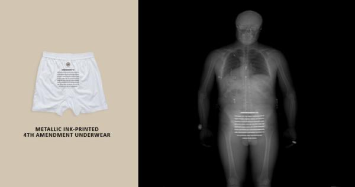

В законную силу вступил приговор Рудничного районного суда города Кемерово согласно которому один из пользователей файлообменной сети О-ГО, принадлежащей местному провайдеру Goodline признан виновным.

Евгений Мартыненко (так зовут пользователя, скрывавшегося подником Злой_Тролль) признали распространителем детской порнографии. По словам Евгения порнография в расшаренных папках действительно было, но о том, что в роликах принимали участие дети ему неизвестно.
Назначенная искусствоведческая экспертиза Евгению возразила и определила возраст отдельных участников порнороликов 16-18 лет.
Вообще тема порнографии в российском обществе всегда была неоднозначна. Редкий человек время от времени не смотрит порнографию, но статья 242 уголовного кодекса, насколько мне известно до сих пор не отменена. Похожая ситуация есть еще с проституцией. Т.е. вроде как нельзя, но здравый смысл преобладает.
Тема детской порнографии куда менее спорна. Если для взрослых съемка в порноролике это обычно работа или хобби (в случае с home video), то в случае с детьми вероятнее всего имеет место быть целый букет сопутствующих преступлений — наркотики, злоупотребление должностным положением, торговля людьми. А здесь уже не до моральных споров.
И вроде как не все ясно в случае со Злым_Троллем. Тут и неясность алгоритма работы экспертизы, и расплывчатые формулировки (16-18 лет), да и говорят Злой_Тролль такой не один в сети, но иного способа срезать рынок лично я попросту не вижу. 1-2 таких суда, и людям перестанет приходить в голову выкладывать в общий доступ видео с сомнительными участниками. Ведь тот же пиратский софт, к примеру компании Майкрософт, найти в файлообменных сетях стало значительно труднее.